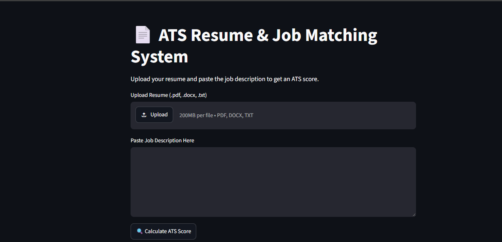

Projects
FlyRank Search Intelligence Internship
Built a transparent baseline ranking system using DuckDB and Python for identifying pages that may require SEO refresh. Designed rule-based scoring, signal validation, ranked queues, and model benchmarking.
Read Case Study →Resume Parser
A machine learning project for extracting structured information from resumes using Natural Language Processing.

Disaster Alert System
Future Final Year Project focused on AI-powered multi-hazard disaster monitoring and decision support.
Future Work
Research Project
Reserved for an upcoming research project in Machine Learning, Operations Research, or Optimization. Details will be added as the work progresses.
Capstone Project
Reserved for my Final Year Capstone project, focused on AI-driven decision-support systems. Details will be added once the project is underway.
Open Slot
Reserved for future work aligned with my research interests in Artificial Intelligence, Data Engineering, and Quantitative Finance.
See the Code
Full source for these projects is available on GitHub.
View GitHub Profile